米米的內心小劇場

Chapter 2
米米的公主離開了他，
米米也哭了一個早上，
選擇放下。
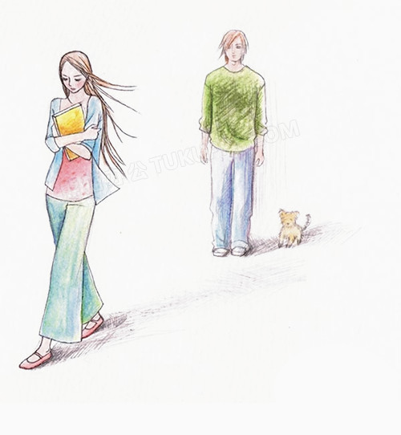
米米決心要好好讓自己成長，
為自己和家人奮鬥。
這時有一位同事很關心米米，
米米也很自然說出自己故事。
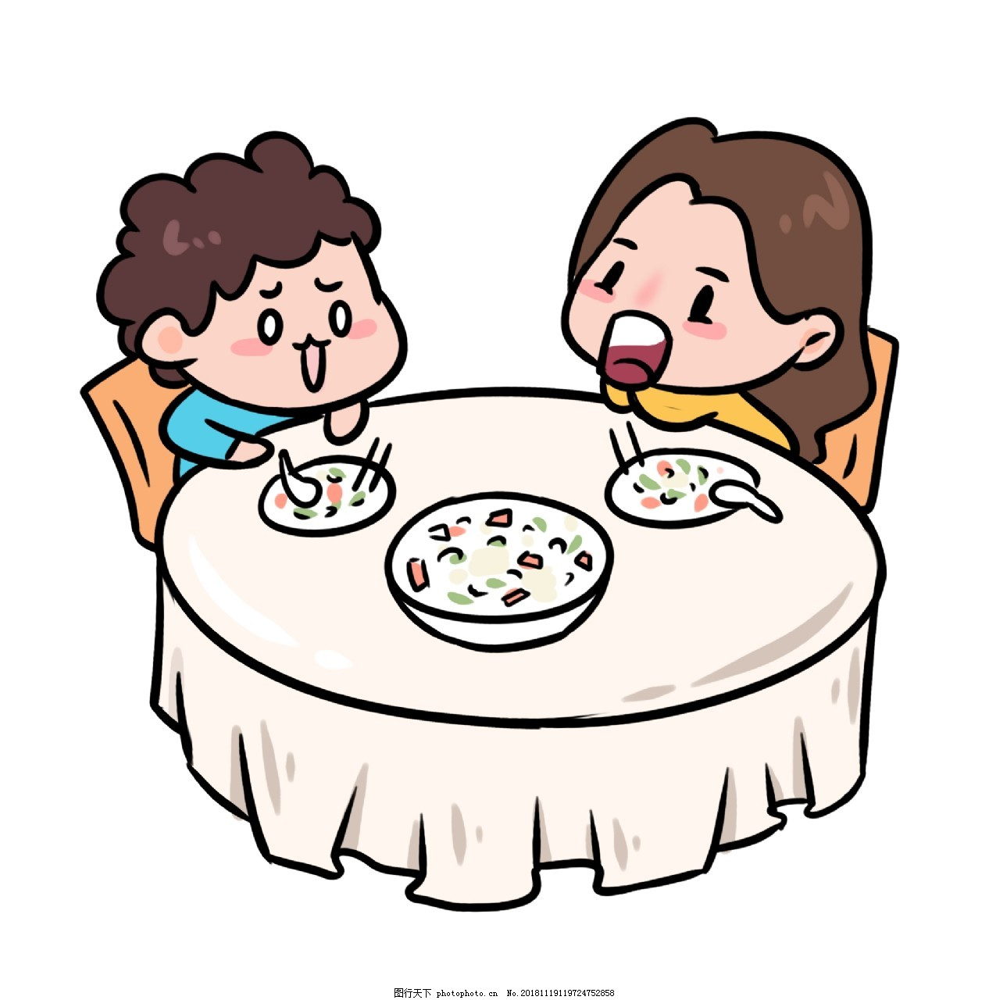
也不知為何，
這同事特別愛笑，
即使有時米米無聊舉動，
她都能狂笑。
也不知何時，
米米開始對她動了心～
發現她笑起來真的特別迷人，
還很常被電到。
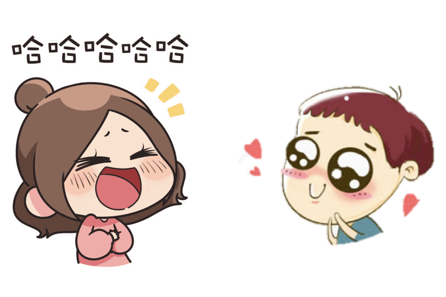
米米內心不知不自覺地，
選擇她成為下一位公主，
也就是凱蒂公主。
（凱蒂好可憐QQ）
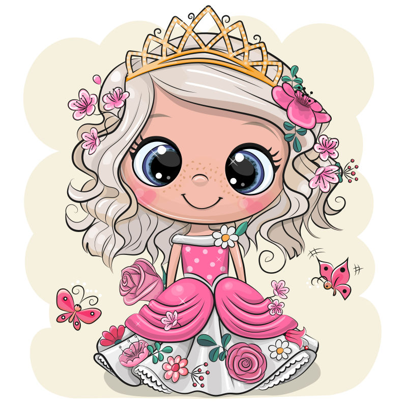
但，
這心一動，
真的讓米米寢食難安。
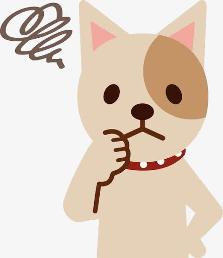
公主大笑，
他心也會很開心。
公主跟他說話，
他內心會很溫暖。
公主在唸他，
他內心感受到甜蜜（喂！。
但是，
公主不理他，
他內心會一些難過。
公主敷衍他，
他開始害怕是不是自己做錯什麼了。
公主生氣了，
他會很愧疚，深怕公主討厭他。
更何況，
公主已經有白馬王子了。
而且，
他們也過的很幸福。
因此，
米米持續真心祝福他們。
可是，
內心又想為公主做很多事。
希望減輕她工作負擔，
可以自己做開心的事。
希望看到她常笑，
誰叫公主笑起來特別耀眼。
希望她不要感到難過，
因爲米米也會擔心和難過。
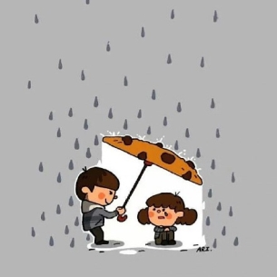
水瓶座個性，
表面理智、冷酷，
內心對喜好人事物會充滿熱情地投入下去。
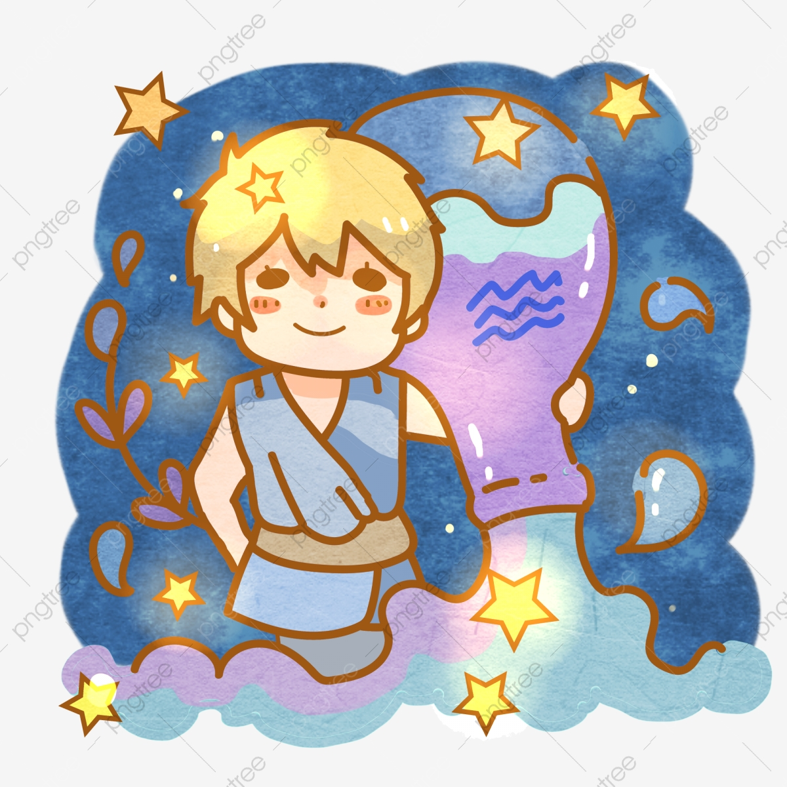
也因此，
米米感到很痛苦。
理智，
知道要放下。
內心，
卻想付出所有。
心情也就起伏不定。
也因此米米失眠一陣子～
這真的太累了，
米米決定要好好和自己內心溝通～
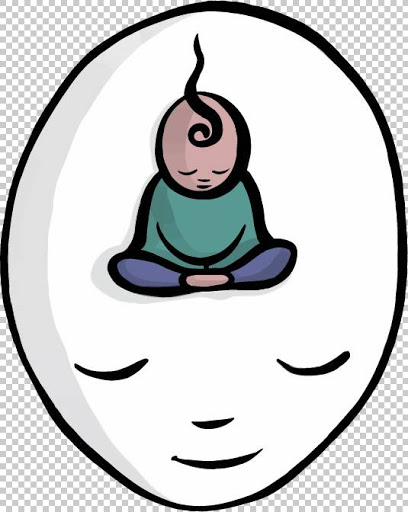
米米發現，
原來內心是很害怕孤獨，
而且也是非常自卑的人。
常常需要透過幫助他人，
透過他人回饋、歡樂、滿足
才覺得自己有價值。
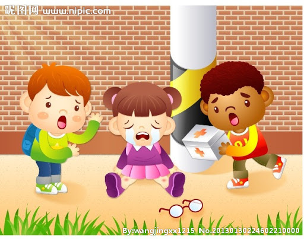
因為前公主的存在，
米米每時每刻都有付出，
因此過的很開心。
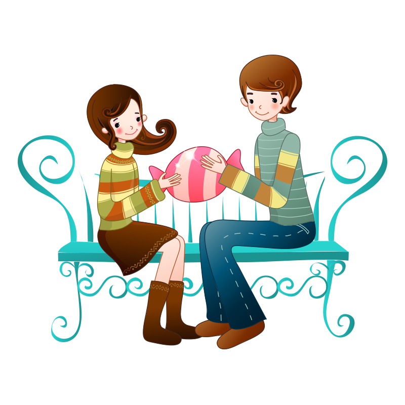
可是前公主離開了，
內心就有了缺口。
非常急著找下一位公主。
站得穩，才能扶持他人；
心有陽光，才能溫暖他人。
米米明白了，
現階段，
不是急著尋找下一段感情來填補內心空缺。
而是，
要能與自己內心相處
以及學會如何自己站起來，
成為真正溫暖、成熟、智慧的人。
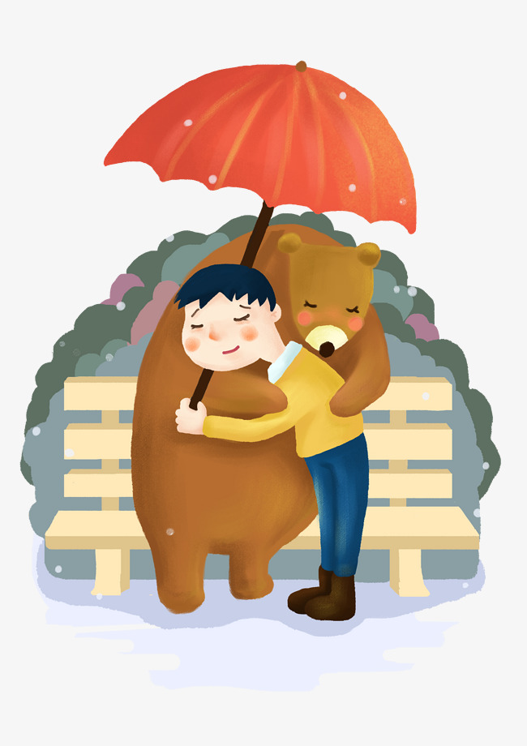
明白了之後，
不再執著於公主一舉一動，
不再失眠了。
心真的放鬆許多。
也因為這段經歷，
米米看見了自己潛力。
原來有了決心，
想做的事就更容易達成。
雖然沒有真的完全放下公主，
但米米現在單純只希望是，
大家都可以成為朋友，
相互取暖，
僅此而已。
可是，
米米很擔心，
自己的過度熱情，
嚇到公主了QQ
希望把上面故事與公主分享，
讓公主不要害怕。
原本，
約公主吃飯，
敘述這一切點點滴滴，
可是，
被公主拒絕了QQ。
只好，
用這非常詭異方式，
把米米內心小劇場寫下來。
米米還想跟公主說，
米米只是公主小粉絲。
當看見公主心情不好，
都會想做點什麼。
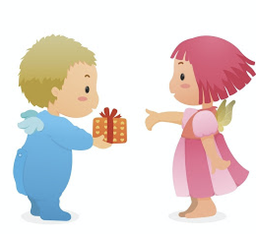
米米不太會說話，
但公主需要人聊天或訴苦，
米米都很願意陪伴與聆聽。
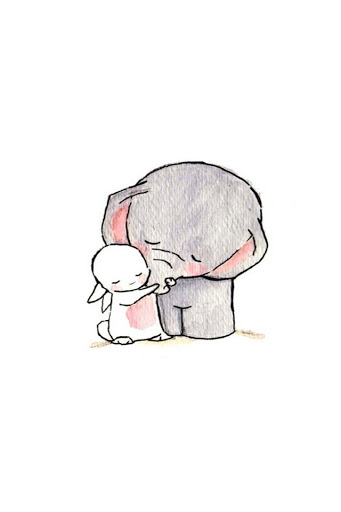
米米沒那麼聰明，
但公主如果遇到困難，
米米也盡力協助。
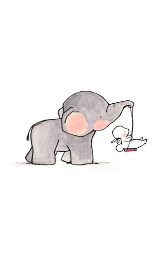
不過，
如果做了讓公主不舒服的事，
公主一定要讓米米知道。
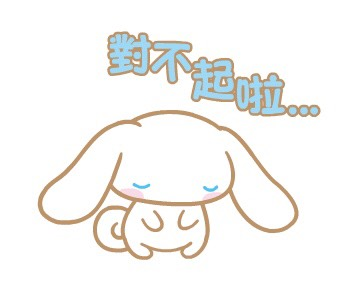
米米也會開始，
不吵公主了，
一切會回到平靜。
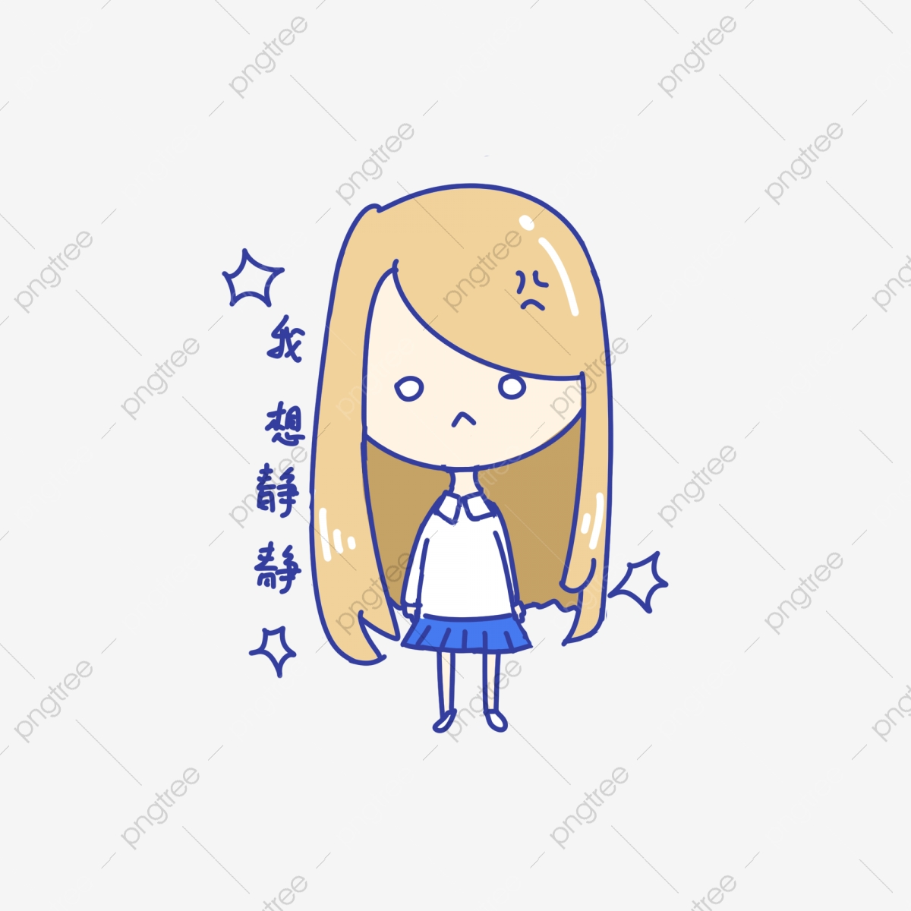
最重要，
公主開心、常笑就好。